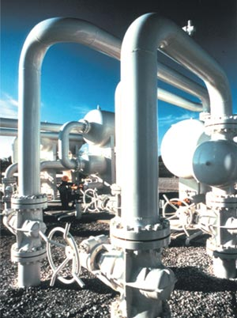

|
About U.S. Natural Gas Pipelines - Transporting Natural
Gas
based on data through 2007/2008 with selected updates |
||||
|---|---|---|---|---|
|
Beginning of Industry Restructuring In April 1992, the Federal Energy Regulatory Commission (FERC) issued its Order 636 and transformed the interstate natural gas transportation segment of the industry forever. Under it, interstate natural gas pipeline companies were required to restructure their operations by November 1993 and split-off any non-regulated merchant (sales) functions from their regulated transportation functions. This new requirement meant that interstate natural gas pipeline companies were allowed to only transport natural gas for their customers. The restructuring process and subsequent operations have been supervised closely by FERC and have led to extensive changes throughout the interstate natural gas transportation segment which have impacted other segments of the industry as well. Most natural gas pipelines in the United States, including many in the intrastate segment as well, now only transport natural gas and no longer buy and sell it. Although interstate natural gas pipelines are no longer subject to as much regulation as before Order 636, many aspects of their operations and business practices, are still subject to regulatory oversight. For example, FERC determines the rate-setting methods for interstate pipeline companies, sets rules for business practices, and has the sole responsibility for authorizing the siting, construction, and operations of interstate pipelines, natural gas storage fields, and liquefied natural gas (LNG) facilities. Regulatory bodies have the authority to suspend some rules and regulations under specific circumstances, especially in response to emergency and disaster situations, placing needed projects on a regulatory fast-track. Coordinating with other Regulatory Agencies Almost all applications to FERC for interstate natural gas pipeline projects require some level of coordination with one or more other Federal agencies. For example, the Environmental Protection Agency assists FERC and/or State authorities in determining if the environmental aspects of a pipeline development project meet acceptable guidelines. FERC is also required to take the lead on the environmental reviews under the National Environmental Policy Act, the Endangered Species Act, the National Historic Preservation Act, and the Magnuson-Stevens Act. Governing the safety standards, procedures, and actual development and expansion of any pipeline system is the job of the U.S. Department of Transportation’s Office of Pipeline Safety (OPS). A pipeline may not begin operations until a line, or line segment, has been certified safe by the OPS. The OPS retains jurisdiction for safety over the lifetime of the pipeline. Regulation of Mergers and Acquisitions To help ensure fairness and to preserve open markets, agencies at the Federal, State, and sometimes local levels examine mergers and acquisitions. Among those most actively involved in examining mergers and acquisitions at the Federal level are FERC, the Department of Justice, the Federal Trade Commission, the Internal Revenue Service, and the Nuclear Regulatory Commission. State public utility commissions, or their equivalent, also have responsibility for oversight in mergers and acquisitions of pipeline companies. Each of the various agencies has the power to impose conditions that must be met to get approval for a merger or acquisition. If these conditions are not satisfied, the agencies can prevent the corporate combination from taking place. For example, analysis of mergers or acquisitions for potential harm to the consumer is under the shared jurisdiction of the Federal Trade Commission and the Department of Justice, where the concept of market power plays a central role in the antitrust review process.
|

|
|||